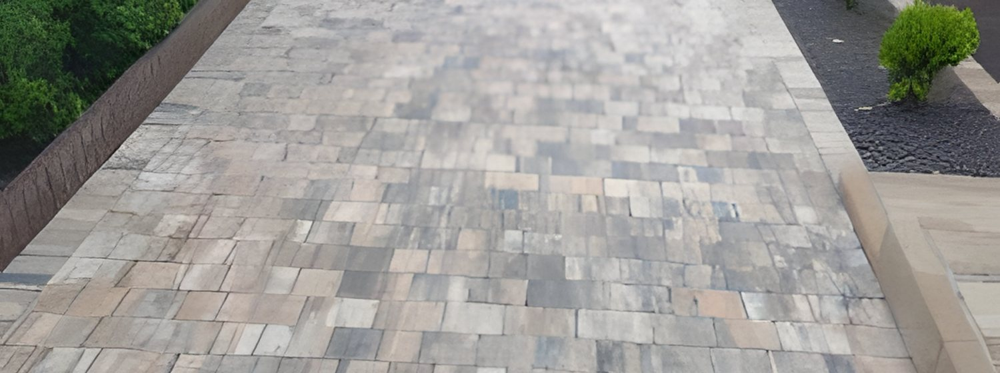

Układamy kostkę brukową od podstaw - z porządną podbudową, spadkami i odwodnieniem, żeby nawierzchnia trzymała się latami i nie zapadała po pierwszej zimie.

Elfobruk to firma rodzinna prowadzona przez Rafała i Mirosława Tomczaków. Od 11 lat układamy kostkę i zakładamy ogrody w Ostrowie i okolicy. Robimy podjazdy, tarasy, schody i ścieżki, a do tego zieleń i nawadnianie - dlatego całe obejście możemy zrobić od początku do końca sami.
Pracujemy po kolei i bez skrótów. Najpierw korytowanie i solidna podbudowa, potem spadki i odwodnienie, żeby woda spływała jak trzeba, a na końcu układanie kostki i uporządkowanie zieleni. Ustalamy termin i się go trzymamy, a po skończonej pracy zostawiamy teren posprzątany. Doradzimy też przy doborze materiału i rozwiązań, jeszcze zanim zaczniemy kopać.
Doświadczenie zdobywaliśmy nie tylko w Polsce. Przez blisko 10 lat pracowaliśmy jako brukarze i ogrodnicy w Irlandii, a przez ostatni czas również w Niemczech - stamtąd wynieśliśmy staranność wykończenia i standardy pracy, które dziś dajemy klientom pod Ostrowem.
Kostkę widać od razu, ale o tym, czy przetrwa lata, decyduje to, czego nie widać - podbudowa.
Kluczowych prac nie podnajmujemy - maszyny i operatorzy są nasi, a każdą realizację doradzamy indywidualnie.
Bez zobowiązań - opowiedz, co trzeba zrobić, a my podpowiemy jak i wycenimy.